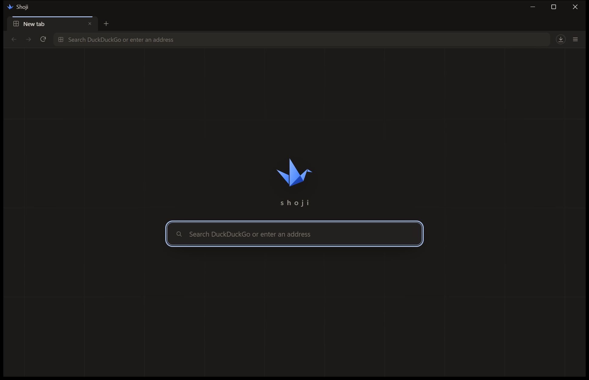
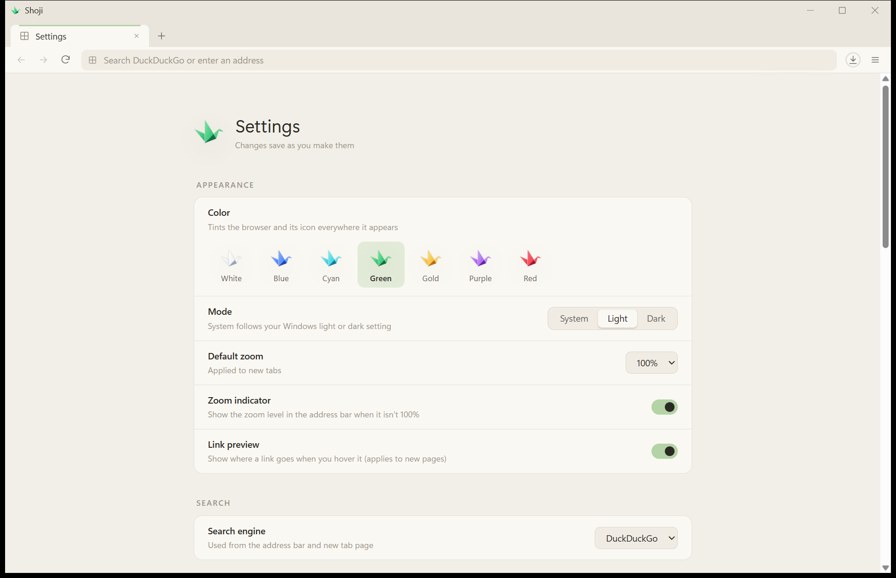

障 子
障 子
A paper-thin
browser for Windows.
A small Rust shell around the WebView2 engine Windows already keeps up to date. Quiet, private when you want it, and light enough to forget it's running.


障 子
A small Rust shell around the WebView2 engine Windows already keeps up to date. Quiet, private when you want it, and light enough to forget it's running.


A shoji is the sliding paper screen of a Japanese room: a thin frame that lets light through and keeps very little for itself. Shoji doesn't ship a browser engine. It uses the Microsoft Edge WebView2 runtime that Windows 10 and 11 already install and patch, and adds only what a browser needs around it — tabs, an address bar, a side panel, settings — drawn in a calm paper-and-ink interface.
Fonts and ad shield included. No bundled engine, no updater service.
No account, no sync server. Favicons come from the pages themselves.
Remembers like a normal browser by default; Private mode keeps every tab in memory only.
Background tabs drop to low memory priority at once and are suspended after a few idle minutes.
Choose a colour on first launch. The interface takes a soft pastel tint, and the icon in the title bar, taskbar, Start menu and desktop follows. Change it any time in Settings.
↑ Try them — this page changes colour too.
A warm paper theme for light mode and an ink theme for dark, following Windows or set by hand.
Shinbun (Newsreader over Instrument Sans), Kinari (soft Fraunces over Literata) or Hon (Literata throughout).
Native shadow, snapping and resize edges stay; the caption goes.
One moon button darkens every site (built on a modified Dark Reader), leaves already-dark pages alone, and remembers sites you'd rather see in their own colours.
Read an article without the chrome, put two pages side by side, and keep related tabs together.
Ctrl+K jumps to tabs, pages and actions. Favourites are one click away.
The notepad button unfolds a sheet of ruled paper in the corner; just start typing. Pages are kept locally as a small diary.
Drag a tab out of the window and the live page moves as it is, without reloading.
Session restore, HTTPS-only mode and per-site zoom — the small things, done.
Byōbu is Shoji's built-in ad and tracker blocker. It uses Brave's open-source adblock matcher with uBlock Origin and Brave filter lists, fetched at runtime and refreshed in the background — nothing to install, nothing to keep up to date by hand.
Logins, cookies, cache and history live in your Windows profile, encrypted by the engine with your Windows credentials.
Everything stays in memory and vanishes when you close the window; sites you pick can still keep you signed in.
Apart from the pages you open, Shoji's own requests are filter-list refreshes and, if on, your search engine's suggestions as you type.
Download ShojiSetup.exe from the latest release. It installs for your user only into %LOCALAPPDATA%\Programs\Shoji — no administrator prompt — adds Start menu and desktop shortcuts, and registers an uninstaller under Settings → Apps.
| Browser executable | 6.3 MB |
| Installer | 7.1 MB |
| One new tab, total private memory ¹ | 287 MB |
| Six Wikipedia tabs, just loaded (private / working set) ¹ | 680 / 463 MB |
| Same, after 75 s with five in the background ¹ ² | 656 / 547 MB |
Release build on Windows 11; totals include the host and all WebView2 processes. ¹ Measured before Byōbu was added; page memory is dominated by the WebView2 engine. ² Rest timer set to 1 minute for this run; the default is 5.
| New tab / window | Ctrl+T Ctrl+N |
| Reopen closed tab | Ctrl+Shift+T |
| Close tab | Ctrl+W or middle-click |
| Next / previous tab | Ctrl+Tab Ctrl+Shift+Tab |
| Go to tab 1–8 / last | Ctrl+1…8 / Ctrl+9 |
| Address bar | Ctrl+L Ctrl+E Ctrl+K |
| Find in page | Ctrl+F |
| Downloads | Ctrl+J |
| Zoom | Ctrl++ Ctrl+- Ctrl+0 |
| Developer tools | F12 |